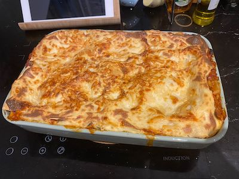

Yona & Tracey's Vege-Lasagna

Description
This delicious vegetarian lasagna is rich, and should keep those vege-runners in your family happy.
Recipe lifted from 'Everyday Vegetarian' cookbook by Cooking Light
Ingredients
For the main sauce
- 3 eggplants, sliced
- 3 zuchinnis, sliced
- Pinch of salt
- Pinch of pepper
- Pinch of paprika
- 2 Capsicums, diced up
- 4-5 Button Mushrooms, diced up
- 1 diced onion
- At least 4 cloves of garlic
- 1 jar of Pasta sauce
- 1 can of diced tomatoes
- Fresh basil
- Minced parsley
- 9 sheets of lasagna noodle
For the cheese sauce
- 1 tablespoon of butter
- 2 tablespoons of all-purpose flour
- 1 cup of milk
- Grated parmesan cheese, go to town
Directions
- Preheat oven, or grill (roughly 190-200°C).
- Brush eggplant and zuchinni slices with oil and place them on a baking tray, grilling for about 10 minutes.
- Repeat procedure for remaining eggplants and zuchinnis and leave aside.
- Heat up a pot and sauté the onion for about 8 minutes. Sauté the garlic and capcisum, until the pepper is nice and tender. Add mushrooms and continue cooking for a further 3-4 minutes. Add salt, pepper & parika, if you have hot sauce, add your favourite now. Throw in your pasta sauce and diced tomatoes, and leave to cook for a further 5 minutes.
- Melt the butter in a saucepan over medium heat. Add the flour, cook for 1 minute, stirring constantly with a whisk, until well blended. Gradually add milk, stirring constantly. Bring to boil; reduce heat to medium low, and simmer for 5 minutes, until thickened, stirring frequently. Stir in cheese and salt. Remove from heat.
- Preheat over to 200°C.
- Wet surface of your ceramic dish with the main sauce.
- Place 3 sheets of lasagna sheets onto the surface. Coat a layer of the main sauce on top, and arrange zuchinnis and eggplant over the top. Coat with cheese sauce.
- Repeat the at least once more, and layer top of lasagna with 3 more sheets, and cover surface with remaining cheese sauce, and sprinkle the rest of your parmesan.
- Bake for 1 hour, and leave aside for 15 minutes.